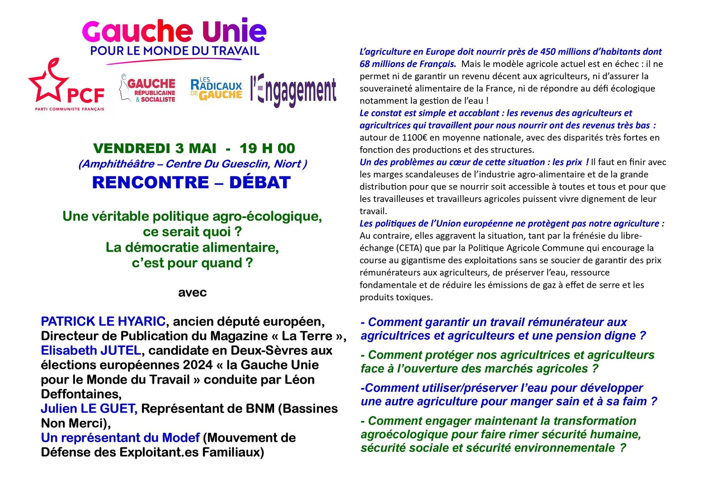

Annonce fédérale
À Niort, le débat du 3 mai sur l’agroécologie annoncé puis annulé
Date indiquée par Facebook · 19 avril 2024
Repères éditoriaux
L’invitation du 19 avril portait sur l’agroécologie et la démocratie alimentaire. L’annulation annoncée le 1er mai figure dans la publication associée.
Texte conservé avec la publication
La campagne des #électionseuropéennes est lancée et des initiatives publiques sont prévues un peu partout en France par les communistes qui se mobilisent pour donner plus d'écho à la liste "La Gauche Unie pour le Monde du Travail" conduite par notre jeune camarade, Léon Deffontaines
Dans notre département des #DeuxSèvres un premier rendez-vous est prévu le VENDREDI 3 MAI 2024 à #Niort, amphithéâtre du Centre Du Guesclin Place Chanzy à 19 heures. Il aura pour thème l'agriculture : Une véritable politique agro-écologique, ce serait quoi ? La démocratie alimentaire, c’est pour quand ?
Avec les participations de :
Patrick Le Hyaric ancien député européen, Directeur de publication du Magazine "La Terre" après avoir été Directeur de L'Humanité,
Elisabeth Jutel candidate des Deux-Sèvres à ces élections européennes 2024 sur la liste « la Gauche Unie pour le Monde du Travail » conduite par Léon Deffontaines
Julien LE GUET, Représentant de BNM (Bassines Non Merci)
Un représentant du Modef (Mouvement de Défense des Exploitant.es Familiaux)
#GaucheUnie
#europeennes2024
La campagne des #électionseuropéennes est lancée et des initiatives publiques sont prévues un peu partout en France par les communistes qui se mobilisent pour donner plus d'écho à la liste "La Gauche Unie pour le Monde du Travail" conduite par notre jeune camarade, Léon Deffontaines
Dans notre département des #DeuxSèvres un premier rendez-vous est prévu le VENDREDI 3 MAI 2024 à #Niort, amphithéâtre du Centre Du Guesclin Place Chanzy à 19 heures. Il aura pour thème l'agriculture : Une véritable politique agro-écologique, ce serait quoi ? La démocratie alimentaire, c’est pour quand ?
Avec les participations de :
@[100045022687743:2048:Patrick Le Hyaric] ancien député européen, Directeur de publication du Magazine "La Terre" après avoir été Directeur de L'Humanité,
Elisabeth Jutel candidate des Deux-Sèvres à ces élections européennes 2024 sur la liste « la Gauche Unie pour le Monde du Travail » conduite par Léon Deffontaines
Julien LE GUET, Représentant de BNM (Bassines Non Merci)
Un représentant du Modef (Mouvement de Défense des Exploitant.es Familiaux)
#GaucheUnie
#europeennes2024

Sources
Archive rouge · export Facebook · AR-0002-FB-01419
À lire aussi · À Niort, le débat du 3 mai sur l’agroécologie est annulé